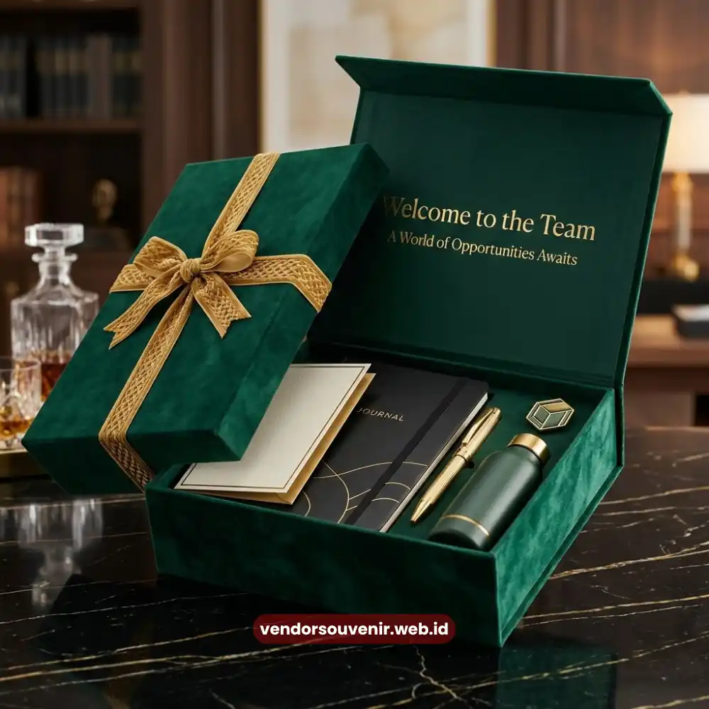

Daftar Isi
Custom branding welcome kit adalah proses penerapan identitas visual perusahaan, seperti logo, warna, dan tipografi, secara konsisten pada setiap item merchandise onboarding karyawan baru. Penerapan yang konsisten membantu memperkuat citra profesional perusahaan sekaligus menciptakan pengalaman visual yang kohesif bagi karyawan sejak hari pertama bekerja.
- Custom branding welcome kit membantu memperkuat identitas visual perusahaan di mata karyawan baru.
- Elemen desain seperti logo, warna, dan tipografi perlu diterapkan secara konsisten di seluruh item.
- Konsistensi branding lintas item welcome kit mencerminkan tingkat profesionalisme perusahaan.
- Vendor Souvenir membantu mewujudkan konsep branding welcome kit sesuai identitas visual perusahaan Anda.
Mengapa Custom Branding Penting Diterapkan pada Welcome Kit Karyawan?
Custom branding penting diterapkan pada welcome kit karena setiap item yang diterima karyawan baru berfungsi sebagai representasi visual pertama dari identitas perusahaan. Representasi visual ini sangat penting di luar dokumen formal maupun presentasi internal perusahaan.
Ketika logo, warna, dan gaya desain perusahaan diterapkan secara konsisten, karyawan baru dapat lebih cepat mengenali identitas visual perusahaan. Hal ini turut membangun rasa memiliki sejak awal masa kerja bagi para karyawan baru.
Barang yang mereka gunakan sehari-hari terasa terhubung langsung dengan tempat mereka bekerja. Selain manfaat internal, branding pada welcome kit juga memiliki nilai promosi tidak langsung yang efektif.
Item seperti tumbler, tas, atau apparel yang dibawa keluar lingkungan kantor berpotensi dilihat oleh khalayak lain. Hal ini turut memperluas eksposur identitas visual perusahaan secara organik di masyarakat.
Bagi perusahaan yang sedang membangun employer branding, penerapan custom branding pada welcome kit menjadi titik sentuh yang penting. Titik sentuh ini relatif mudah dikendalikan namun memberikan dampak jangka panjang terhadap persepsi karyawan dan lingkungan sekitar.

Elemen Desain dalam Custom Branding Welcome Kit
Elemen Desain Apa Saja yang Perlu Diperhatikan dalam Branding Welcome Kit?
Elemen desain yang perlu diperhatikan dalam branding welcome kit meliputi konsistensi logo dan pemilihan palet warna korporat. Tipografi serta teknik aplikasi cetak yang sesuai dengan jenis bahan setiap item juga sangat krusial.
Logo menjadi elemen paling mendasar yang harus ditampilkan secara proporsional pada setiap barang. Ukuran dan posisi logo yang tidak konsisten antar item dapat menimbulkan kesan kurang rapi dan profesional, meskipun secara kualitas bahan barang-barang tersebut sudah baik.
Oleh karena itu, penentuan pedoman ukuran logo minimal dan area aman pencetakan menjadi penting. Langkah ini harus dilakukan sebelum proses produksi massal dilakukan oleh vendor.
Palet warna korporat juga perlu dijaga kesesuaiannya pada berbagai bahan, terutama ketika diterapkan pada bahan yang berbeda seperti kain, logam, atau plastik. Setiap bahan memiliki karakteristik warna yang berbeda saat proses cetak dilakukan.
Sehingga diperlukan penyesuaian teknis agar hasil akhir tetap mendekati identitas warna asli perusahaan. Tipografi pada elemen tambahan, seperti kartu ucapan atau kemasan welcome kit, sebaiknya mengikuti panduan brand guideline.
Konsistensi tipografi membantu memperkuat kesan profesional perusahaan secara keseluruhan. Sekaligus menjaga keselarasan visual antara welcome kit dengan materi komunikasi perusahaan lainnya.
Bagaimana Menjaga Konsistensi Branding di Setiap Item Welcome Kit?
Konsistensi branding di setiap item welcome kit dapat dijaga dengan menyusun panduan desain yang jelas. Selain itu, perlu dilakukan simulasi visual sebelum proses produksi berjalan.
Dan memastikan seluruh item diproduksi melalui proses kontrol kualitas yang sama dan ketat. Panduan desain atau brand guideline mencakup ketentuan logo, warna, dan tipografi.
Ini menjadi acuan utama bagi tim produksi dalam menerapkan branding di berbagai jenis bahan dan ukuran barang. Tanpa panduan yang jelas, hasil akhir antar item berisiko memiliki tampilan yang berbeda meskipun sebenarnya berasal dari identitas visual yang sama.
Simulasi visual atau mock up sebelum produksi massal juga membantu perusahaan melihat gambaran akhir hasil branding. Tahap ini memberi kesempatan untuk melakukan penyesuaian sebelum barang diproduksi dalam jumlah besar.
Sehingga risiko ketidaksesuaian dapat diminimalkan sejak awal tahapan pengerjaan. Selain itu, penting untuk memastikan seluruh item welcome kit diproduksi melalui satu alur kerja yang terintegrasi.
Produksi yang terpecah di beberapa vendor berbeda cenderung meningkatkan risiko perbedaan hasil cetak, warna, maupun kualitas. Menjaga konsistensi branding pada welcome kit membutuhkan perhatian pada detail desain sekaligus proses produksi yang terkoordinasi dengan baik dan profesional.

Vendor Souvenir Siap Membantu Anda Menghasilkan Welcome Kit Terbaik
Pertanyaan yang Sering Diajukan (FAQ)
Apakah setiap item welcome kit harus memiliki logo perusahaan yang sama persis?
Logo sebaiknya konsisten dari sisi proporsi dan warna, meskipun ukuran penerapannya dapat disesuaikan dengan bentuk dan ukuran masing-masing item.
Apakah custom branding welcome kit membutuhkan brand guideline resmi dari perusahaan?
Brand guideline sangat membantu proses produksi agar hasil akhir lebih konsisten, meskipun perusahaan tanpa panduan resmi tetap dapat berdiskusi langsung dengan tim desain vendor.
Apakah teknik cetak logo berpengaruh terhadap hasil branding pada welcome kit?
Teknik cetak dapat memengaruhi ketahanan dan tampilan akhir logo, sehingga pemilihan teknik yang sesuai dengan jenis bahan setiap item perlu didiskusikan sejak tahap konsultasi.
Maroon Souvenir
Partner Corporate Gift terpercaya di Indonesia. Berpengalaman melayani ratusan perusahaan sejak 2018.
Lihat Portofolio Kami